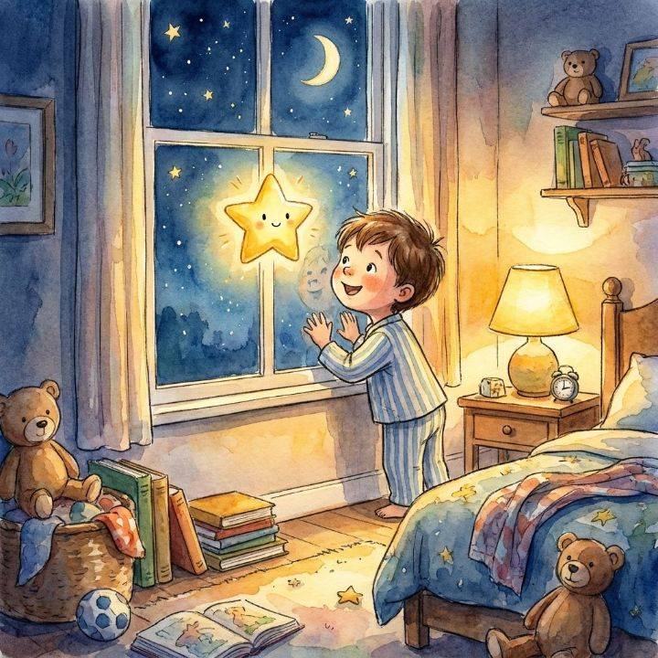

Sunday 7:52 pm · First contact
Press play
Jess Rivera and Mia, 4, at the kitchen table after a friend's text.
THE LIBRARY CASSETTE · REBUILT FOR THE WEB
Press play on the stories you make together.
Photos of their drawings. Their voice on every page. A little music underneath. One link that plays anywhere.
Open a tape someone made for you: a shared link, a .storysync file, or our demo tape.
Make a story
Snap the drawings. Record the voice, page by page. The Stage shows precisely what your listener will get — then hand it over as one link.
Remember the magic?
Library books with cassette tapes. Reading along while the narrator guided you page by page. Background music that made every story feel alive.
Now any storybook can read itself — in the voice and mood you choose.
StorySync Reader — plays any tape in any browser. No app, no account.
StorySync Creator — pictures, voices, a little music and timing, made together.
SSYNC Protocol — the open file between them. Like PDF, for storybooks.
Nothing leaves this device until a grown-up taps through the gate. No trackers, ever.
A product of Island Development Crew LLC ·
Part of the SyncHQ Suite
What you are looking at
The front door, and the only spectacle in StorySync: the house tape is caught sliding into a deck under the one bright star from page 1. Beside it, the same page on a phone has already gone calm - two doors, Jon's first words about the library cassette, and the three surfaces that share one file.
Vision it fuses
- Exactly one signature moment, the cassette pressed into the deckdocs/design-direction.md §10; Landing.tsx HeroDeck (760 ms, then /read?demo=1)
- Two doors, one loop: receive and createdesign-direction §1, §4; Landing.tsx PlayDoor/MakeDoor
- Jon's first words for the emotional core, 'Remember the magic?' and 'Read along. Listen. Feel.'/classic hero and 'What is SSYNC' (git 588aeff)
- The wedge: any storybook reads itself in the voice and mood you choosedesign-direction §9.1
- Naming: StorySync Reader, StorySync Creator, SSYNC Protocol; like PDF, for storybooksdesign-direction §9.3; CLAUDE.md §1
- Brand frame: a product of Island Development Crew LLC, part of the SyncHQ Suite/classic footer
How it connects
Press play swallows the tape and opens the demo's cover gate on this same laptop; one tap on Tap to Begin starts the room in screen 2. The Make door is the other way in - the one Mia walks through on Monday in screen 3.
Today and next
Shipped: the cassette-into-deck hero (760 ms, then /read?demo=1; instant under reduced motion), the two doors, the starfield, the footer privacy line. Vision changes, all small: the hero tape carries the demo's title (today it reads 'StorySyncHQ · SIDE A · PRESS PLAY'), page 1's sky aligned behind the deck, the 'Remember the magic?' band carried over from /classic, the three-surfaces row and the company line. The landing's protocol teaser must stop printing '4:32 · AAC/M4A' for a tape with no recorded voice; the true label is '~1:47 · READ-ALONG'.
Sunday 7:53 pm · Page 2 of 8
The room around a page
Mia on Jess's lap, lights low, the house tape reading itself.
PAGE 2 · WONDER
Every night, she watched the world below. She saw children sleeping, parents reading stories, and cats prowling on rooftops.
BEST WITH THE LIGHTS LOW AND THE SOUND UP
ONE PAGE, THREE WAYS
and cats prowling on rooftops.
and cats prowling on rooftops.
and cats prowling on rooftops.
saved on this device only
Can I make one?MIA, 4MONDAY, WITH HER OWN DRAWINGS →
What you are looking at
The house tape reading itself on the family laptop: an open book in a room lit by its own colors, the word 'cats' glowing while both rooftop cats watch. The deck chip shows the three cassette sounds at once - the narrator, the melody dipping under it, the chime waiting for the turn - and three small stills show the cover gate, the turn itself and the same page set three ways.
Vision it fuses
- The three sounds of the cassette memory: narrator, 'turn the page' chime, melodyCLAUDE.md §9
- The Player as the room: ambient blurred backdrop, vignette, no dead blackdocs/10x-plan.md G3/WP-P; player.css
- Read-along: amber current word, warm past words; TTS boundaries or a linear sweep for a recorded voiceWP-P; player/timing.ts
- Music bed ducked about −12 dB on the dual-bus engine; moods crossfade at page 4src/lib/audio/engine.ts, music.ts; demo manifest
- Page-turn cue: synthesized paper swish + wooden thock, under 300 ms, own AudioContextplayer/sound.ts
- Tap to Begin cover gate, the iOS audio unlockdocs/format-spec.md §4; Player.tsx
How it connects
Arrives from screen 1's Press play and the cover gate. The tape turns itself page by page to 'The End', whose card offers Make your own story; Mia asks 'Can I make one?' - and on Monday, with her own drawings, she does (screen 3).
Today and next
Shipped: Tap to Begin, the ambient room, read-along (exact for the browser voice, a linear sweep for recorded voices), the page-turn cue, ducking, mood crossfades (1.6 s - the manifest's own crossfade duration is not read yet), Reading options, keyboard, chrome that hides after 4.2 s, silent-tape mode. Vision: the two-page spread at desktop width (today page 2 renders full-bleed with its text on a measured scrim), the expanded three-sounds chip, tape packs as progress, fullscreen on open (from /classic), and word-to-picture hotspots (Idea). Honest: the house tape has no recorded narration - it is read by the browser voice.
Monday 6:05 pm · Page 3 of 5
Snap. Tell. Hear it.
Mia photographs her crayon drawings and tells each page. Jess types her words.
Listening… tap again when you are done
Recordings live only in this browser until a grown-up taps Finish my story.
I was scared of the dark.
Twinkle came to my window.
words typed by Mom, as Mia said them
A grown-up needs to allow the microphone for this site — look for the lock or microphone icon next to the web address, choose Allow, then tap Try again.
MADE IN 7:4810:00
What you are looking at
The North Star, happening: at the kitchen table a four-year-old photographs her own crayon drawings and tells each page in her own voice, with gentle music already underneath. Simple mode is three big tools around a glowing Stage; a tape-red ring means the tape is listening, and the whole five-page story takes 7 minutes 48 seconds.
Vision it fuses
- North Star Child Journey: photos of her drawings, her voice on every page, gentle music auto-addedCLAUDE.md §1
- The ten-minute test, a 5-page narrated story made in under 10 minutes, shown happeningdesign-direction §9.5; PLAN_OF_ATTACK POC checks
- 'Child Mode is a phone pointed at drawings on the kitchen table'ARCHITECTURE_REVIEW.md, Dropzone row
- Camera-first native capture; EXIF-safe resize to 2048 px or less, about 350 KB a pageCLAUDE.md §2; src/lib/images.ts
- Simple mode is the product: huge targets, Stage + rail + filmstrip + transportdesign-direction §5, §9.2
- Three friendly tools first, Magic set apart (resolves the three-versus-four tension)design-direction §1 vs ToolRail.tsx
How it connects
Begins where screen 2 ended: 'Can I make one?' Mia tells pages 4 and 5 the same way; at 6:09 the gold Finish my story lights up and Jess taps it - the grown-up moment in screen 4, on this same tablet.
Today and next
Shipped: Simple mode, camera-first capture through processImageSafe, tap-to-record and stop with blips, the page lock, voice badges, Wonder on by default, autosave on this device only, the microphone-switched-off recovery, Magic as a local generator. Vision: the rail with Magic visually set apart (today four equal tools), the Stage borrowing the Player's ambient backdrop (Next), the filmstrip as a tape ribbon with a mood lane, the listening mascot and the giant Hear-it button (Idea). The ten-minute ribbon is an annotation - there is deliberately no clock in a child's view; 'Made in 7:48' is printed on the finished tape. Words do not light during a take: that would need on-device speech alignment.
Monday 6:09 pm · Before anything leaves
A grown-up moment
Jess, the grown-up. Mia has gone to find her slippers.
BEFORE ANYTHING LEAVES THIS TABLET
A grown-up moment
Finishing the story saves it and can make a private link to share. A child's voice is personal information, so a grown-up answers this first. Nothing has left this device yet.
What is 7 × 6?
STORY BY (OPTIONAL)
Your child's voice never goes anywhere without you.
No trackers, no analytics. Share links are unlisted and random, and deleting the story removes the link, the pictures and the recordings.
What goes into your tape
01020304050607Metadata
Twinkle Came to My Window · by Mia, age 4 — with Mom · English
Visual
5 photos of Mia's drawings · about 340 KB each
Text
the words Mia said, typed by Mom, kept as text — never baked into the pictures
Voice
5 recordings · become AAC/M4A when you tap Continue (WAV if this browser can't make AAC)
Sound
Wonder, a music box that dips under every word
Behavior
2-second pauses · the turn-the-page chime · words light up
SignatureV2.1 · DRAFT
© 2026 Mia, age 4 — with Mom · personal use
Nothing has left this tablet yet.
signature.voiceConsent into manifest.json: voice 'Mia, age 4 — with Mom', granted by parent/guardian, dated. The file carries it, not a server.What you are looking at
Before anything leaves the tablet, a grown-up answers a question no pre-reader can tap through and gives consent in one sentence. Beside the gate, a printed sheet lists in plain words everything inside the tape - and ticking the box inks a stamp onto the Signature layer, where consent will travel with the file.
Vision it fuses
- COPPA rule 1: nothing leaves the device without a parent; arithmetic a pre-reader can't tap throughPRIVACY.md; ParentGate.tsx
- Voice consent written into the tape (signature.voiceConsent) so it travels with the file10x-plan WP-S; manifest.ts
- Trust wedge: 'your child's voice never goes anywhere without you'ARCHITECTURE_REVIEW.md Miss #2
- The seven-layer packet explained in plain wordsdesign-direction §9.4; layers.ts; PacketDiagram.tsx fills
- Signature layer, v2.1 draft: ownership, rights, consentformat-spec §7
- Published-audio rule in plain words: AAC/M4A, WAV the only fallback, Opus neverCLAUDE.md §2; transcode.ts
How it connects
Arrives from screen 3's Finish my story. Continue starts printing: voices become AAC, the manifest is assembled and signed, the tape is saved and a private link is made - screen 5 picks up as the label comes out of the slot.
Today and next
Shipped as shown: 'A grown-up moment', an a × b question asked every time a story is finished, the consent row that appears only when a recorded voice exists, consent, ownership and rights written into the manifest, and AAC conversion in the browser with a WAV fallback. Next: the plain-words sheet of seven layers beside the gate, the inked consent stamp, and the line 'Your child's voice never goes anywhere without you.' Today there is one consent record per tape, named after 'story by'.
Monday 6:11 pm · Shared by text
One link, Grandma's iPhone
Jess sends from the family tablet. Grandma Rose, 71, listens on her iPhone.
Your tape is ready
MADE IN 7:48- Converting voices to AAC · 5/5
- Assembling the SSYNC manifest · 5 pages
- Saving your tape · cloud library
- Evening out each voice · plannedNext
Delete removes the pictures, the recordings, the saved copy and the link. Nothing is kept in an archive.
POINT A PHONE CAMERA HERE
Grandparents do not need the app, an account, or the file — the camera app opens the story in any browser.
Unlisted and unguessable. Only someone holding this link can open the story — deleting the story revokes it.
Mia made you something. Turn the sound up.
BEST WITH THE LIGHTS LOW AND THE SOUND UP
I was scared of the dark. Twinkle came to my window.
tablet · Chrome
at Finish my story
mono · ~96 kbps · M4A
by text message
iPhone · Safari
What you are looking at
The tape prints with Mia's drawing on its label and 'Made in 7:48' beside it: a private link, a QR, a file, and a delete that really deletes. A tape ribbon carries four passport stamps from the Android tablet to Grandma's iPhone two states away - and on the other end, one tap later, Mia's word 'window' lights up in Mia's own voice.
Vision it fuses
- Finish flow: gate → AAC → assemble → save → link, shown as a printed, labeled tapedesign-direction §5; PublishCard.tsx
- Published narration is always AAC/M4A, so an Android recording plays on an iPhoneCLAUDE.md §2; ARCHITECTURE_REVIEW Miss #1; format-spec §3
- Client-side normalization: a child's voice never goes to a server to be transcodedformat-spec §3; decisions 2026-08-02
- The grandparent moment, the reason the format existsdocs/10x-plan.md G1
- Hand-off as one link or one file: unlisted link, QR, Web Share, .storysyncdesign-direction §1; PublishCard.tsx
- 'Made in m:ss' as proof of the ten-minute testStudio.tsx madeIn; design-direction §9.5
How it connects
Follows screen 4's Continue. Share the link… goes out by text; at 6:14 Grandma taps Tap to Begin and the tape reads itself in Mia's voice. When it ends, her end card offers something new - answering back (screen 6).
Today and next
Shipped: the printing label, 'Made in m:ss', the step list, the private link with Copy, the QR, Share the link (Web Share), the unlisted note, the .storysync download, Delete everything, AAC conversion, Tap to Begin, read-along on a recorded voice, and Reading options. Next: Mia's drawing on the label, the size meter, delete drawn as pulling the tape out, 'VOICE: MIA' on the cover and the narrator in the deck chip (the Creator never writes metadata.narrator today), and evening out each voice. The passport ribbon is a diagram, not UI. Cloud share codes are 16 hex characters (64-bit) today, short of the 128-bit that PRIVACY.md promises.
Side B · Answer, keep, open up, grow
Monday 6:31 pm · The reply
Grandma answers back
Grandma Rose in her armchair, reading glasses on, recording a goodnight.
“Google cannot read this in your voice.”
THE DEMO MOMENT · PROTOCOL VISION REVIEW, AUG 2026
- Pictures
- 5 crayon drawings by Mia, age 4
- Words
- Mia said them; Mom typed them
- Voice
- Mia, age 4 — with Mom
- Music
- Wonder
- Made in
- 7:48 on an Android tablet
- Owner
- © 2026 Mia, age 4 — with Mom · personal use
- Consent
- given by a parent or guardian · Oct 19, 2026 · written into this tape
Record one page in your voice. It goes back to Mia as her own little tape.
PASS IT ON · POINT A PHONE AT THIS
storysynchq.vercel.app/
read?story=3f9c2a7be41d0c58
Nobody is counting plays. This page has no trackers.
READ THISNext
Goodnight, my brave little star. I'll look for Twinkle at my window tonight. Love, Grandma.
DRAFT · AAC — SAFARI RECORDED AAC, SO FINISH IS A PASSTHROUGH
A grown-up moment
Whose voice is on this tape?
WRITTEN AS · voice 'Grandma Rose' · granted by self · Oct 19 2026
MONDAY 6:16 PM · THE END CARD
MONDAY 6:31 PM · HER REPLY, MID-TAKE
What you are looking at
The tape ends on liner notes - who drew it, whose voice, and the consent record inside the file - and a new button: send a thank-you back. Grandma records one page in her own voice on her own phone, reading her words in large type, and the loop that began with a house tape now runs both ways.
Vision it fuses
- The Signature layer shown to the listener as liner notesdesign-direction §9.4; format-spec §7
- End card closes the loop: replay, Make your own story, and a QR when opened from a linkPlayer.tsx; 10x-plan WP-P
- Receive ↔ create in both directions; Jon's 'BOTH receiving and creating loops'design-direction §1; Aug 2026 directive
- Families persona: a loved one's voice, a gift that lasts/classic 'Who is this for?'
- The demo moment 'Google cannot read this in your voice'design-direction §9.1
- READ THIS teleprompter from the first record paneltests/screenshots/reader-record-panel.png
How it connects
Follows the last page of Mia's tape in screen 5. Grandma finishes her page, passes her own grown-up moment and sends the link to Jess. Tuesday at breakfast it is on the family shelf, stamped NEW (screen 7).
Today and next
Shipped: the end card with its tape label, Read it again, Make your own story, and a QR of the share link when the tape was opened from one; the Creator on a phone; Safari's AAC passed straight through at publish. Next: the J-card liner notes with 'What's inside this tape?', Send a thank-you back with its reply-to chip, the READ THIS card, and consent wording for a grown-up's own voice. Idea: keeping a tape on the phone offline. Today Grandma would sign in to get a link, or send the .storysync file.
Tuesday 7:40 am · Breakfast
Our shelf
Jess and Mia at breakfast. Mia wants to hear Grandma again.
Pick a tape.
Unlisted. Only people you send a link to can open them.
BLANK TAPE ·
YOUR VOICE ·
YOUR PICTURES

THE SHELF
THE SHELF
THE SHELF
THE SHELF
Family tapes never appear here. Unlisted means unlisted.
The link may be incomplete, or the person who made this story may have deleted it — one tap wipes a story everywhere, on purpose.
What you are looking at
A library is cassettes on a shelf: Grandma's reply stamped NEW, Mia's tape lifted in gold, one tape half pulled out because deleting means pulling the tape out, and the house originals sealed in cellophane until they're real. Beside the shelf sits the wedge: any storybook can read itself in the voices and mood you choose - blank cassettes wait for Mom, Mia and Grandma.
Vision it fuses
- A library is cassettes on a shelf; deleting is pulling the tape outdesign-direction §2
- Read Room 'Pick a tape.' and its missing-tape stateReadRoom.tsx
- My Stories and accounts from the first build, recast as a shelf/classic MyStoriesLibrary (Phase 5)
- Curated public library: featured tape, search, genre pills incl. Faith-Based and Personal, original starter catalog, Premium badges/classic PUBLIC_LIBRARY (Phase 7, git da18028)
- 'Public' means unlisted by URL; family tapes are never listedPRIVACY.md rule 4; decisions 2026-09-05
- The wedge: any storybook reads itself in the voice and mood you choosedesign-direction §9.1
How it connects
Grandma's reply from screen 6 sits at the front of the shelf. On Saturday Marco, the engineer in the family, follows 'What's inside this tape?' (screen 8) and later imagines re-voicing the house tape in the family's voices (screen 9).
Today and next
Shipped: the Read Room ('Pick a tape.', the demo, open a .storysync, make your own), the missing-tape state, a delete that removes every copy and the link, and the eight moods. Next: a shelf of the family's saved tapes (the cloud library already exists), Sent to you, and Read it in…, which re-voices any tape in the family's voices once the Creator can open a .storysync. Ideas: search, genres, keeping tapes on the laptop, the curated catalog beyond the Star, and Premium editions. Phase 3: made voices.
Saturday 9:40 am · Taking it apart
One file holds the whole storybook
Marco Rivera, the engineer in the family, with his Saturday coffee.
The SSYNC protocol · version 2.0
One file holds the whole storybook.
SSYNC is to storybooks what PDF is to documents: pictures, words, voices, music and timing in one open file. Deliberately not video. The player is plain web — nobody needs our servers, or our app, to hear a story.
Nothing is uploaded — the ZIP is built on this device.
FIG. 1 — PAGE 3 OF MIA'S TAPE, TAKEN APART Next
signature
© 2026 Mia, age 4 — with Mompersonal use · 2026-10-19consent: parent/guardian
settings · pages[].timing
autoPause 2s × 1.0chime on · words light up Next
pages[].music
Wonder · A major pentatonic76 BPM · ducks 12 dB
pages[].text.audioUrl
assets/narration-3.m4aaac · 6.4 s
pages[].text.content
I was scared of the dark. Twinkle came to my window.
pages[].illustration
assets/page-3.jpg2048 px · 338 KB
metadata
A reader that understands only layers 1–3 still shows the story; each layer above adds a sense.
- MUSTNarration is AAC-LC in M4A, mono, 48 kHz, about 96 kbps.
- MAYFall back to 16-bit WAV, 16 kHz mono. The only fallback.
- MUST NOTOpus, WebM or Ogg. Drafts only, never a published tape.
- PASSversion 2.0 · metadata.title · 5 pages
- PASSevery assets/ path in the manifest exists
- WARNsignature.voiceConsent[0].date is a full timestamp; the v2.1 draft asks for a date
- FAILa hand-edited copy: pages[2].text.audioUrl 'assets/narration-3.webm' uses a draft-only codec — published narration must be AAC/M4A (or WAV fallback)
import { unzipSync, strFromU8 } from 'fflate'; const files = unzipSync(tape); const m = JSON.parse(strFromU8(files['manifest.json'])); for (const page of m.pages) { draw(files[page.illustration.url], page.text.content); }
SSYNC v2.0 · the spec, the schema and the reader are all open. Write your own player — the format outlives the app.
I was scared of the dark. Twinkle came to my window.
FIG. 3 — THE SAME TAPE IN A READER
WE DIDN'T WRITE · LAYERS 1–3 · NO SOUND
SATURDAY 9:40 AM
FROM "WHAT'S INSIDE THIS TAPE?"
manifest.json plus assets/. Rename it .zip and open it with anything; drop it on the Reader and it plays.metadata.title is required. Marco's e-reader draws layers 1–3, picture and words, and Mia's tape still works.What you are looking at
The SSYNC protocol, taken apart on Marco's desk: page 3 of Mia's tape explodes into seven printed layers - her drawing, her words, her waveform, the Wonder melody, the timing, a signed and sealed consent - next to the codec rule, a validator and the few lines it takes to write your own player. On the e-reader beside the laptop, a player nobody at StorySync wrote shows the same page in grey.
Vision it fuses
- SSYNC as PDF for storybooks; StorySyncHQ is two thingsCLAUDE.md §1; format-spec intro
- The seven-layer packet with its exact names, order, fills and the red-stroked 'V2.1 · DRAFT' Signaturelayers.ts; PacketDiagram.tsx
- 'Each layer adds a sense'; only metadata.title is requiredPacketDiagram caption; layers.ts
- Container: a ZIP via fflate, manifest.json + assets/, dangling references rejectedformat-spec §1; container.ts
- The normative codec rule MUST / MAY / MUST NOTformat-spec §3
- Real validator languagemanifest.ts validateManifest
How it connects
Marco reached /protocol from the J-card's 'What's inside this tape?'. He downloads the demo as a .storysync, and that file is what he opens in the desktop Creator in screen 9.
Today and next
Shipped: the /protocol page (facts, the seven layers as flat bands, the container layout, the codec rule and browser ladder, the privacy section, the demo download), the validator messages, the v1 and v2 schemas, and fflate packing. Next: the exploded page taken apart into its layers. Marco's e-reader player is possible today because the spec is open; none exists yet. The WARN line is a real nit: the Creator writes voiceConsent dates as full timestamps where the v2.1 draft expects a date.
Saturday 10:15 am · Imagined in Phase 3
Both are the same room
Marco in Advanced mode, with Jess and Mia recording their parts beside him.
MIA“Why do I shine so bright?” she wondered. The bigger stars just yawned. DAD“Stars shine. That’s what we do. Don’t overthink it.”
End
Pick up where you left off?
Side B · Bedtime · 8 pages · saved 9:58
What you are looking at
Advanced, shown late and as depth: the same Stage and the same kind of tape, with the engineer's tools slid in beside it. Imagined in the Phase 3 desktop Creator, the family re-voices the house tape as a bedtime Side B - Mom narrates, Mia is the little star, Dad the sleepy big stars - on a timeline whose lanes are the SSYNC layers themselves.
Vision it fuses
- Jon's Aug 2026 directive: a digital studio with a viewport like Vegas or After Effects, Advanced for engineers, a desktop app laterdesign-direction §1, §5; decisions 2026-08-25
- 'Both are the same room'; do not lead with Studio Mode (shown ninth of ten)design-direction §1, §9.2
- The shipped Inspector, unchanged: timing, mix, mood readout, activity-envelope honesty, codec badges, manifest JSONInspector.tsx
- Stage = Player: one SsyncManifestdesign-direction §7
- Professional timeline editor and the Tauri 2 Creator (Phase 3)PLAN_OF_ATTACK Deferred; ARCHITECTURE_REVIEW
- Remixable moods: a Hush bedtime Side B, the moat of post-creation ownershipdesign-direction §9.1; moods.ts
How it connects
Marco opened the .storysync he downloaded in screen 8 - the wedge from screen 7's 'Read it in…', made real in Phase 3. Finishing Side B runs the same grown-up moment and prints a second tape for the shelf; then the same file travels further than one family (screen 10).
Today and next
Phase 3: the desktop app (Tauri 2), the professional timeline, Cast with several narration tracks per page (an SSYNC v2.x change), and consent per voice. Shipped inside the frame: the Simple and Advanced toggle and every Inspector section shown (timing, mix, mood readout, the activity note, codec badges, the codec rule, manifest JSON), and the restore prompt. Next: per-page moods, the type-a-feeling field (the mood resolver already exists in the engine), and evening out each voice.
A school morning · Phase 3
Room 4, and the shelf to come
Ms. Okafor and the 22 children of Room 4 at Maple Street Pre-K.
Pero la pequeña estrella no estaba satisfecha. Una noche, respiró hondo y voló: atravesó las nubes, pasó junto a la luna, rumbo al mundo de abajo.
But the little star wasn't satisfied. One night, she took a deep breath and flew — right through the clouds, past the moon, toward the world below.
We show recorded or not yet. Nothing else is measured.
One little star, then a whole sky.
LATER ON THE SHELF · SEALED UNTIL THEY'RE REAL
Creator app for desktop, iPad and Android
Made voices, only with written consent
Narration in more languages
Bring a book you own (PDF)
Licensed music library
Focus Mode for reading time
Guided story helper
Embed, print, EPUB3
storysynchq
Remix shelf, opt‑in
Choose-what-happens pages
What you are looking at
Phase 3, shown as Phase 3: Mia's classroom plays the star book in Spanish with the English beneath, and the teacher's tablet shows progress the only way a child's data should be shown - a shelf of 22 little cassettes that turn yellow when a page is recorded. Below, the rest of the road waits as sealed tapes on a shelf under page 7's sky.
Vision it fuses
- Go-to-market order: families first, schools second, remix laterdesign-direction §9.2
- Enterprise education from the first build: assign stories, link or QR with no install, multilingual/classic 'Built for Classrooms' (git 2f6b7bc)
- 'Track progress' reconciled with COPPA: recorded or not yet, nothing else measuredPRIVACY.md rule 3
- School batch deployment with a written retention policyPRIVACY.md Phase 3; PLAN_OF_ATTACK Deferred
- Multi-language narration as a protocol changePLAN_OF_ATTACK Deferred; v1 voices registry
- Consent from home per voice, with the browser voice as the fallbackParentGate voiceConsent; truth review
How it connects
The same Reader and the same file from screens 2-8, now in a room of 22. The closing line answers screen 1: one bright star over the deck, then a whole sky - and every tape on every shelf is the same open file.
Today and next
Everything here beyond the Reader is Phase 3 or an idea, and is labeled that way: StorySync for Schools, assignments, the class tape, consent links home, retention, bilingual narration, and every sealed cassette. Shipped underneath: any tape plays from a link or QR with no account, consent records travel in the file, and the browser voice reads any page without a recording. The plans are the March 2026 draft and are not on sale.